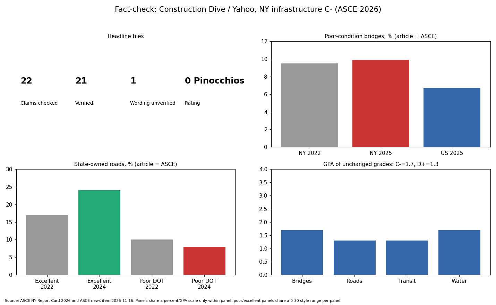

NY infrastructure C- story: accurate, 0 Pinocchios

Summary of findings
Every checkable claim in the Construction Dive/Yahoo piece matches ASCE's own 2026 New York report card materials; rating 0 Pinocchios (accurate). 21 of 22 claims verified; one framing is unverified.
- Overall C-, down from C (2022); national C (2025): confirmed.
- Dams, parks, solid waste declined; 8 unchanged: confirmed (ASCE news item).
- Bridges C-, poor 9.5% to 9.9% vs 6.7% national, $18B invested, $74.5B needed: confirmed.
- Roads D+; excellent 17% to 24%; poor 10% to 8%: confirmed. Transit D+, 85% ridership, $50B: confirmed. Water C-, 40% pre-1940s, up to 40% loss: confirmed.
- IIJA "$30 billion": ASCE says "more than $30 billion"; trivial. Hunt quote matches ASCE's attribution.
- Unverified: the piece's gloss of C- as "adequate, stable" (as summarized by my fetch tool); ASCE's grade key labels C "mediocre, requires attention". Mildly soft, not material.
- Caveats: I read the ASCE news item and report-card page, not the full report PDF (fact sheet unreadable by tool); I read the Yahoo text via a summarizer, so wording is not verbatim. Context: ASCE grades are expert judgments, and the report card itself notes the 2025 bridge data end earlier than the grade year; IIJA expired in September.
Claim check
Answer: all numeric claims match. Key values: as above. Confidence: high for figures (ASCE primary), medium for wording.
Sources
- https://www.asce.org/publications-and-news/civil-engineering-source/society-news/article/2026/11/16/new-yorks-infrastructure-drops-to-c-minus-grade
- https://infrastructurereportcard.org/state-item/new-york/
- https://infrastructurereportcard.org/wp-content/uploads/2026/03/new-york-2026-fact-sheet-1.pdf (unreadable)
- https://yahoo.com/news/us/articles/asce-gives-york-infrastructure-c-190900349.html